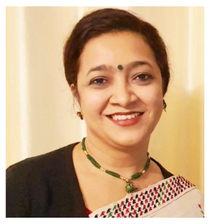

Ms. L.S. Changsan
Chairpersion
View

Ms. L.S. Changsan
Chairpersion
View
Ms. L.S. Changsan
Chairpersion
View
Ms. L.S. Changsan
Chairpersion
View
Ms. L.S. Changsan
Chairpersion
View
Ms. L.S. Changsan
Chairpersion
View
| S. No. | Name | Designation | Qualification |
|---|---|---|---|
| (1) |
Ms. L.S. Changsan |
CHAIRPERSON Additional Secretary & Mission Director, M/o Health & FW |
|
| (2) |
Indrani Kausha |
Economic Advisor, MoHFW Joint Secretary to the Government of India in the Department of AYUSH |
|
| (3) |

|
Joint Secretary to the Government of India in the Department of AYUSH | |
| (4) |

Prof. (Dr). Atul Goel |
Director General, DGHS, GOI | |
| (5) |

|
Joint Secretary to the Government of India in the Department of Disability Affairs, Ministry of Social Justice & Empowerment | |
| (6) |
|
Joint Secretary to the Government of India in the Ministry of Women and Child Development, GOI | |
| (7) |

Dr. Pratima Murthy |
Director, NIMHANS | Dr. Pratima received her MBBS degree from Bangalore Medical College in 1985. She obtained DPM and MD (Psychological Medicine) from NIMHANS in 1987 and 1989 respectively. She joined as a faculty at her alma mater in 1993, and has worked in various academic capacities since then. She is a Fellow of the Royal College of Physicians (FRCP)-Glasgow. Designation – Professor and Head of the Department of Psychiatry, NIMHANS took charge as full-term Director of the Institute on 18th June 2021. Dr. Pratima brings about 30 years of extensive experience and exceptional accomplishments in the field of mental health. A well-recognized leader in addiction psychiatry, she has been instrumental in the successful development of state-of-the-art Centre for Addiction Medicine at NIMHANS. She has served as a consultant to prominent international agencies such as the United Nations Office on Drugs and Crime (UNODC), the International Labour Organisation (ILO) and the World Health Organisation (WHO). She has also served as a resource person for various flagship training programmes in substance abuse prevention and tobacco cessation in the country, and across the globe. Dr Pratima is also recognised for her contribution in improving care for persons with mental illness through her work with the National Human Rights Commission on quality assurance in mental health care both in institutions and in the community. In recognition of her research and academic excellence, Dr. Pratima has received numerous awards and honours including the prestigious Dr. Raja Ramanna State Award by the Government of Karnataka and Lifetime Achievement Award from Rotary. Recently, she was honoured with the WHO Regional Director’s Special Recognition Award on ‘World No Tobacco Day 2021’ for her remarkable service in tobacco control. A prolific author, she has more than 300 research publications in various international indexed journals and scientific books to her credit. |
| (8) |
Dr. Tarun Kumar |
Director, CIP Ranchi. | |
| (9) |
Dr. S. K. Deuri |
Director, LGBRIMH, Tezpur | DPM (CIP, Ranchi University), MD(NIMHANS, Bangalore) |
| (10) |
|
Joint Secretary and legal advisor, Dept of Legal Affairs | |
| (11) |
|
Joint Secretary, Ministry of Finance | |
| (12) |
|
Joint Secretary, Ministry of Home Affairs | |
| (13) |
Vacant |
One mental health professional having at least 15 years of experience in the field to be nominated by the Central Government | |
| (14) |

Shri Kamlesh Kumar Sahu |
One Psychiatric Social Worker having at least 15 years of experience in the field to be nominated by the Central Government Qualification – Ph.D., M.Phil., PSW, MA, BA, FIASP Designation – Government Medical College & Hospital GMCH, Department of Psychiatry He has more than 17 years of experience in the Mental Health field. His experience includes teaching and supervising postgraduate trainees, planning, executing, evaluating and coordinating counselling/mental health /psychosocial rehabilitation services and research. He has done more than 45 research papers and presented in international and national seminars and conferences. He has fifty publications in his credit. | |
| (15) |

Dr. Mythyli Hazarika |
One Clinical Psychologist having at least 15 years of experience in the field to be nominated by the Central Government | |
| (16) |

Smt. Rantala Sreevani |
One mental health nurse having at least 15 years of experience in the field to be nominated by the Central Government | |
| (17) |

Shri Shivam Jayant |
Persons representing persons who have or had mental illness to be nominated by the Central Government | |
| (18) |

Ms. B. S. Lavanya |
Persons representing persons who have or had mental illness to be nominated by the Central Government | |
| (19) |
Dr. D. Mamatha |
Persons representing care givers of persons with mental illness or organizations representing care givers, to be nominated by the Central Government | |
| (20) |
Ms. Janhavi Biwalkar |
Persons representing care givers of persons with mental illness or organizations representing care givers, to be nominated by the Central Government | |
| (21) |

Shri Rajiv Aggarwal |
Persons representing non governmental organisations which provide services to persons with mental illness, to be nominated by the Central Government Qualification - BA (Hons), St Stephen’s College, Delhi University MBA, Indian Institute of Management, Ahmedabad Designation – Chief Executive, Sambandh Health Foundation Profile - Over three decades in advertising and communication Seven years as Chief Executive of Sambandh Health Foundation in Mental Health | |
| (22) | Vacant |
Persons representing non governmental organisations which provide services to persons with mental illness, to be nominated by the Central Government | |
| (23) |

Dr. Rajesh Sagar |
Qualification - MD, FAMS, FIMSA, FRCP(Edin.) Designation - Professor of Psychiatry, AIIMS, Delhi. Profile - He is in the field of psychiatry for more than 33 years, contributed majorly to the strengthening of psychiatry in the MBBS curriculum, insurance cover for people with mental illness, Training of primary care doctors, nurses, social workers, community health workers, National Mental Health Program, District Mental Health program, several inspections/Assessment of central govt. mental health institutions, Indo-Australia mental health project, development of new Mental Health Policy, Mental Healthcare Act & Rules and Regulations, National Suicide Prevention Strategy and several national policy issues for the Ministry of Health Family Welfare. He has active interest in academics and research and acted as Investigators for more than 170 research projects incl. several WHO; international projects, Published more than 700 articles, chapters and books and have more than a lakh citations. He has been an Expert/advisory member for several task forces & organizations. Received several awards and honours including ICMR Award, Outstanding Researcher award as country’s Topmost researcher in psychology/mental health based on research output in SCOPUS | |
| (24) |
Vacant |
Persons representing areas relevant to mental health |